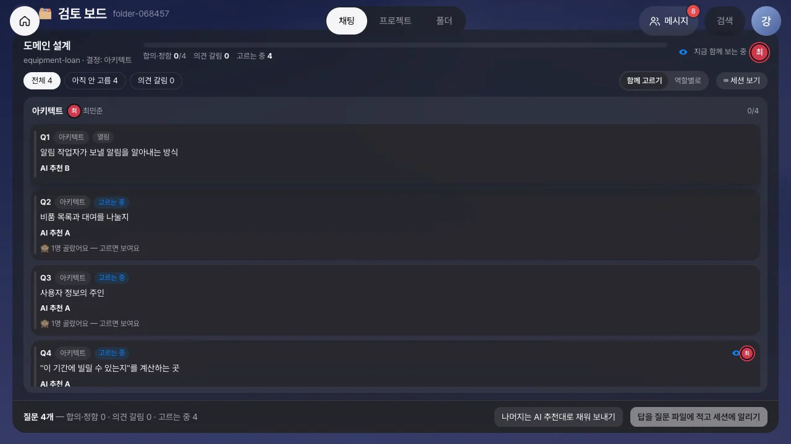
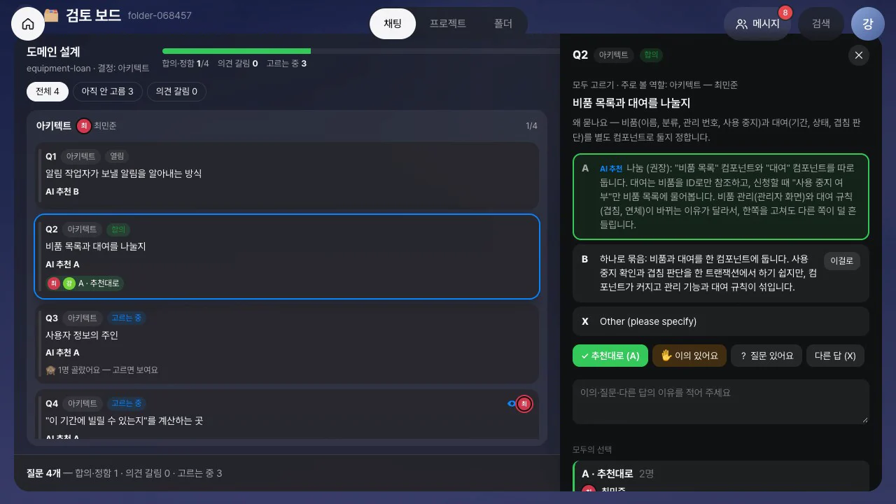
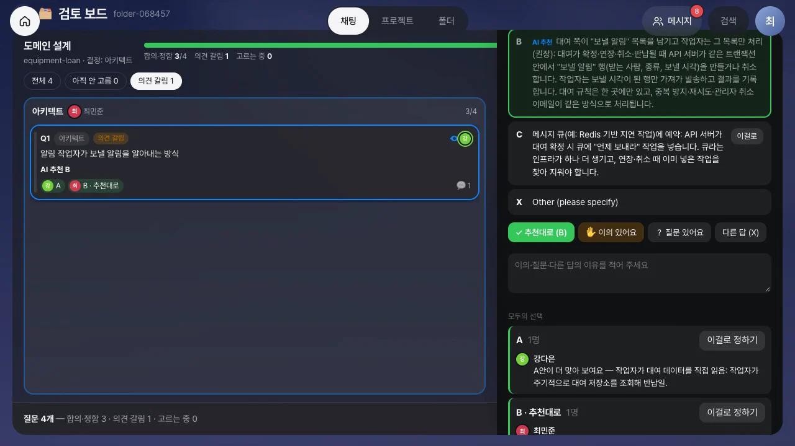
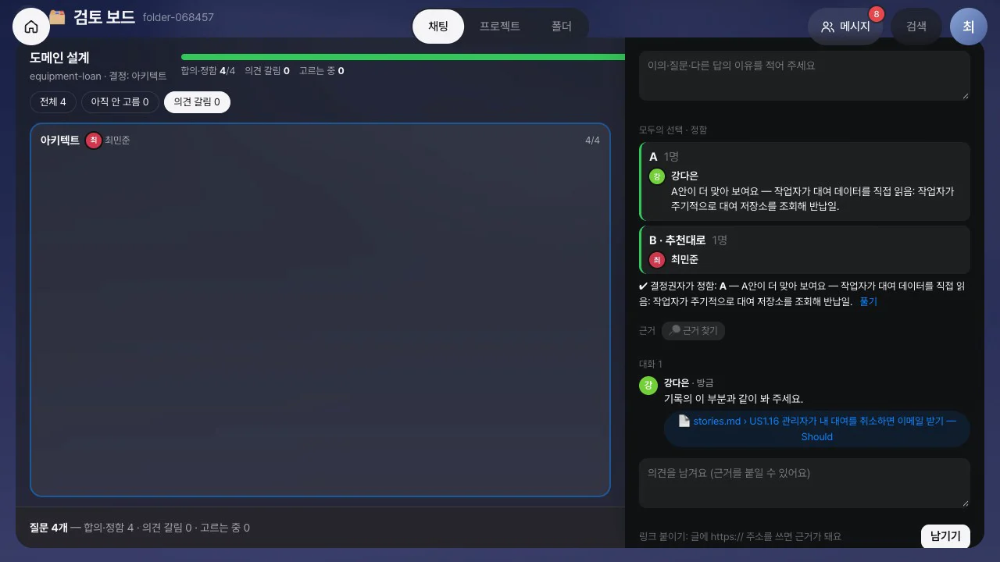
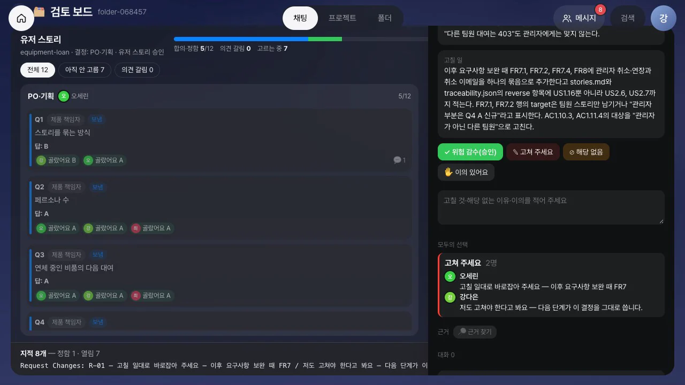
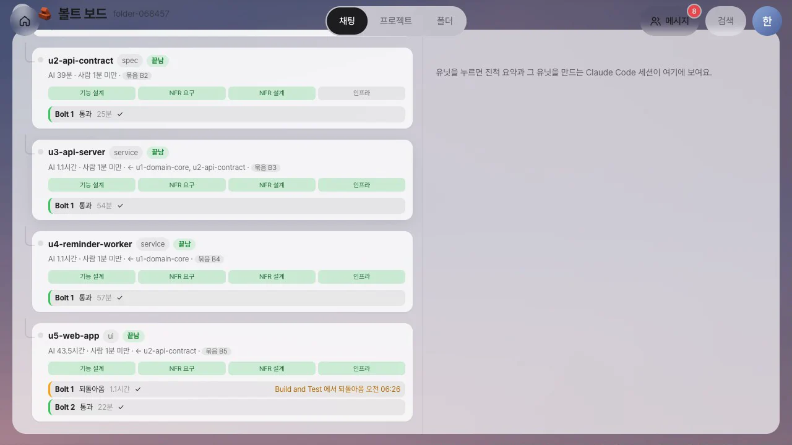
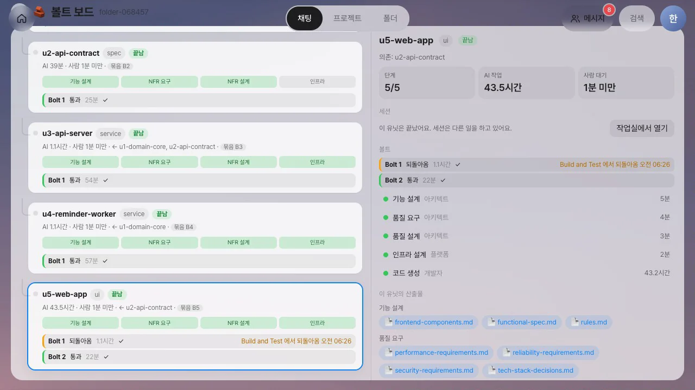
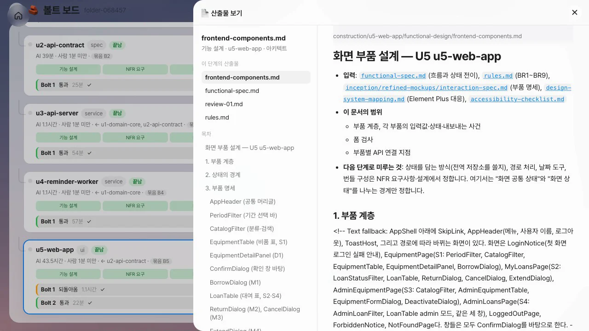

AI-DLC가 묻는 질문과 승인 창의 검토 지적을 검토 보드에서 팀이 함께 고릅니다. 다른 사람의 선택은 내가 고른 뒤에 보입니다. 같은 답이 모이면 합의가 되고, 답이 갈리면 결정권자가 이유와 근거를 보고 정합니다. 결정은 한 번에 묶어 세션에 넣습니다. 볼트 보드는 의도 아래에 유닛을, 유닛 아래에 볼트를 펼쳐서 지금 만드는 유닛과 그 유닛을 만드는 Claude Code를 바로 보여 줍니다.
왜 필요한가#
30장에서는 AI-DLC가 사람의 응답을 기다리면 해당 단계 담당자에게 카드가 가고, 담당자는 결정 화면에서 하나씩 결정했습니다. 실제로 실행해 보니 병목은 AI가 아니라 사람의 검토였습니다. 단계 담당자 한 사람이 질문을 차례로 확인했고, 다른 역할을 맡은 사람이 봐야 할 질문도 그 사람을 거쳐야 했습니다. 승인 창에는 검토 지적의 요약만 보여서 지적이 가리키는 문서를 찾아 열어 보는 데 시간이 들었습니다.
AI-DLC는 질문마다 추천 답과 그 이유((권장: …))를 적고, 검토 지적에는 위치(stories.md > US2.6처럼)를 적습니다. 검토 보드는 이 정보를 그대로 씁니다.
| 하던 방식 | 검토 보드에서 |
|---|---|
| 단계 담당자 한 사람이 질문을 하나씩 확인 | 폴더 구성원 모두가 카드마다 자기 답을 고름(함께 고르기) |
| 먼저 말한 사람의 의견을 따라감 | 다른 사람의 선택은 내가 고른 뒤에 보임. 그전에는 「1명 골랐어요」만 |
| 추천이 맞는지 따로 찾아봄 | 카드마다 AI-DLC 추천과 그 이유, 왜 묻는지가 보임. 맞으면 「추천대로」 한 번 |
| 이견은 회의나 메신저로 | 답이 갈린 카드만 의견 갈림으로 모임. 누가 무엇을 왜 골랐는지 선택별로 묶여 보이고, 결정권자가 이걸로 정하기 |
| 승인 창의 요약만 봄 | 지적마다 원본 보기 — 문서 전체를 열고 그 절에 띠 |
| 결정을 하나씩 입력 | 정해진 것을 한 번에 보내기: 질문 파일에 답을, 승인 창에 결정 하나를 |
같은 답이 모인 카드는 더 볼 필요가 없습니다. 팀은 답이 갈린 카드에만 시간을 씁니다. 그래도 정리되지 않으면 의견이 갈린 카드만 골라 30장의 몹 회의 대화방에 올릴 수 있습니다. 왜 이 방식을 기본으로 삼았는지는 AX School 핸즈온 20장 검토 보드에 있습니다.
준비#
| 항목 | 내용 |
|---|---|
| 팀 세션 | 30장처럼 AI-DLC 저장소를 연결형 폴더로 붙이고, 역할을 정하고, 팀 세션을 띄웁니다 |
| 실습 요청 | 「팀 비품 대여 — 노트북·프로젝터 같은 비품 목록을 보고, 기간을 정해 빌리고, 같은 비품의 기간이 겹치면 막는다. 반납일 하루 전에 알림을 보내고, 알림은 따로 도는 작업자가 보낸다. 화면은 Vue, 서버는 Node(Express)로」, /aidlc classic |
| 등장인물 | 팀 리드 한지수, PO 오세린, 아키텍트 최민준, 개발자 강다은, QA 윤서준(30장과 같음) |
이 장의 영상과 그림은 Claude Code와 AI-DLC 2.11.2 classic으로 이 요청을 실제로 한 번 실행한 기록입니다. 열네 단계를 거쳐 유닛 다섯 개가 만들어졌습니다.
따라 하기 1 — 폴더에 붙은 앱 세 개#
- 한지수로 로그인해 폴더에서
비품 대여폴더를 엽니다. AI-DLC 팀 세션 띠 아래에 앱 단추 세 개가 보입니다: 산출물 보기, 볼트 보드, 검토 보드. - 세션 시작을 눌러 팀 세션을 띄우고, 쉘에
/aidlc classic "팀 비품 대여 — …"를 입력합니다.

따라 하기 2 — 질문을 함께 고르기#
도메인 설계 단계에서 AI-DLC가 질문 네 개를 남긴 장면입니다. 이 단계의 결정권자는 아키텍트 최민준입니다.
- 최민준의 홈에 「도메인 설계 질문 4개가 답을 기다려요」 카드가 옵니다. 나머지 구성원에게는 「도메인 설계 — 함께 고를 질문 4개」 카드가 옵니다. 어느 카드에서든 검토하기를 누르면 검토 보드가 열립니다.
- 보드에는 질문마다 카드가 하나씩 있고, 카드에 AI 추천이 적혀 있습니다. 머리줄에는 「합의·정함 0/4 · 의견 갈림 0 · 고르는 중 4」와 지금 함께 보는 중인 사람이 보입니다. 오른쪽 위의 함께 고르기 / 역할별로는 결정권자가 바꿀 수 있고, 기본은 함께 고르기입니다.
- 카드를 열면 서랍에 질문과 질문하는 이유, 선택지(추천에 표시), 버튼이 나옵니다. 추천이 맞으면 ✓ 추천대로를, 다른 선택지를 고르려면 그 선택지의 이걸로를 누릅니다. 최민준이 먼저 Q2~Q4를 추천대로 고릅니다.
- 강다은의 화면에서는 그 카드들에 「1명 골랐어요 — 고르면 보여요」만 보입니다. 무엇을 골랐는지는 자신이 고른 뒤에 보입니다.
- 강다은이 Q2에서 ✓ 추천대로를 누르자 카드가 합의로 바뀌고, 서랍의 모두의 선택에 누가 무엇을 골랐는지 나옵니다. 같은 답을 두 사람이 고르면 합의입니다.
- Q1(알림 작업자가 보낼 알림을 알아내는 방식)에서 강다은은 추천(B)과 다른 A를 고르고 이유를 적습니다. 🔎 근거 찾기를 누르면 기록에 있는 산출물에서 질문의 낱말이 나오는 절을 찾아 줍니다. 모델을 호출하지 않아 결과가 바로 나옵니다. 찾은 스토리
stories.md › US1.16을 의견에 붙이기로 붙여 의견을 남깁니다. - 최민준이 Q1을 추천대로 고르자 두 화면에서 동시에 카드가 의견 갈림으로 바뀝니다. 서랍의 모두의 선택에는 「A 1명 — 강다은」과 「B · 추천대로 1명 — 최민준」이 이유와 함께 묶여 있고, 묶음마다 이걸로 정하기가 있습니다.
- 강다은이 붙인 근거를 누르면 산출물 보기가 옆 시트로 열립니다. 스토리 문서 전체가 보이고, US1.16 절에 검토 중인 부분 띠가 둘러집니다. 목차에서도 그 절이 강조됩니다.
- 최민준이 A 묶음의 이걸로 정하기를 누릅니다. 카드에 「결정권자 정함: A」가 적히고 머리줄이 「합의·정함 4/4」가 됩니다.
- 아래 막대의 답을 질문 파일에 적고 세션에 알리기를 누릅니다. 답 네 개가 질문 파일에 한 번에 적히고, 세션에 답을 적었다고 알립니다. 아직 합의되지 않은 카드가 남았으면 나머지는 AI 추천대로 채워 보내기로 보낼 수 있습니다.









영상에는 나오지 않지만 QA 윤서준도 Q2~Q4에서 같은 답을 골랐습니다. 그래서 뒤쪽 그림의 카드에는 세 사람의 선택이 보입니다.
따라 하기 3 — 검토 지적도 함께: 원본을 보고 결정 하나로#
유저 스토리 단계가 승인을 기다리는 장면입니다. 실제 순서에서는 유저 스토리 승인이 도메인 설계보다 먼저입니다. 보드 사용법을 질문부터 익히도록 순서를 바꿔 실었습니다.
- AI-DLC가 유저 스토리를 작성하고 검토를 거친 뒤 승인을 기다립니다. 결정권자인 PO 오세린의 홈에 「유저 스토리 승인」 카드가 옵니다. 검토 지적이 있는 승인 카드는 결정 화면 대신 검토 보드로 열립니다. 지적이 없는 승인은 30장처럼 결정 화면에서 선택합니다.
- 보드 위쪽에는 이 단계에서 이미 보낸 질문 네 개가 「보냄」으로 남아 있고, 그 아래에 지적 여덟 개가 카드로 올라와 있습니다. 아래 막대에는 「지적 8개 — 정함 0 · 열림 8」이 보입니다.
- 지적 카드 R-01을 열면 심각도(Major), 지적 내용, 고칠 일이 보이고, 위치는 원본 보기 링크로 바뀌어 있습니다.
stories.md › US2.6을 누르면 스토리 문서 전체가 열리고 US2.6 절에 띠가 둘러집니다. - 지적마다 처리 방법을 고릅니다. ✓ 위험 감수(승인)는 고치지 않고 승인한다는 뜻입니다. ✎ 고쳐 주세요와 ⊘ 해당 없음을 고를 때는 이유도 적습니다. 오세린은 R-01에 이유를 적고 고쳐 주세요를 누릅니다.
- 강다은도 같은 보드에서 같은 지적을 봅니다. 질문과 마찬가지로 오세린의 판단은 강다은이 판단한 뒤에 보입니다. 강다은도 이유를 적고 고쳐 주세요를 누르자, 모두의 선택에 「고쳐 주세요 2명」이 두 사람의 이유와 함께 묶입니다.
- 강다은은 R-02의 원본을 확인한 뒤 위험 감수(승인)로 정합니다. 나머지 지적도 두 사람이 위험 감수로 정합니다.
- 여덟 개가 모두 정해지면 아래 막대에 세션에 들어갈 결정 하나가 미리 보입니다. 고칠 것이 있으면
Request Changes: R-01 — …이고, 여기에 두 사람이 적은 이유가 함께 들어갑니다. 모두 위험 감수로 정하면Approve입니다. 결정을 묶어 세션에 넣기를 누릅니다. - 세션 보기로 공유 쉘을 열면 Claude Code가 그 요청대로 스토리 문서를 고치는 모습이 보입니다. 고친 뒤 다시 승인을 묻습니다.





따라 하기 4 — 코드 계획은 개발자에게, 볼트 보드에서 유닛과 볼트 보기#
AI-DLC 원문은 「유닛 하나는 볼트 하나 이상으로 만들어진다」고 정의합니다. 볼트 보드는 이 정의대로 의도 아래에 유닛을, 유닛 아래에 볼트를 보여 줍니다. 유닛의 코드 생성 한 번이 볼트 하나이고, 빌드·테스트에서 되돌아오면 같은 유닛에 볼트가 하나 더 생깁니다. 딜리버리 계획의 묶음은 유닛에 「묶음 B1」 같은 이름표로 붙습니다. 용어의 배경은 AX School 핸즈온 21장 볼트 보드와 진척에 있습니다.
- 구현은 유닛마다 기능 설계 → 품질 요구 → 품질 설계 → 인프라 설계 → 코드 생성 순서로 진행됩니다. 유닛의 코드를 쓰기 전에 AI-DLC가 코드 계획 승인을 묻습니다(「Approve the code plan for u1-domain-core?」). 이 카드는 개발자 강다은에게 갑니다.
- 결정 화면 머리에 지금 단계 코드 생성 · 담당 역할 개발자가 보이고, 승인 창 아래에는 그 단계의 산출물을 여는 원본 보기가 있습니다.
code-generation-plan.md를 누르면 계획 문서 전체가 옆에 열립니다. 무엇을 만들고 테스트를 얼마나 작성할지 확인한 뒤 Approve Plan을 누릅니다. 이 답은 세션의 선택 창에 그대로 들어갑니다. - 코드가 만들어지는 동안 한지수가 폴더에서 볼트 보드를 엽니다. 머리줄에 「유닛 5개 · 볼트 1개」가 보이고, 의도 아래에 유닛 카드가 의존 순서대로 놓여 있습니다. 유닛마다 설계 단계 네 개가 칸으로 나오고 그 아래에 볼트가 한 줄씩 붙습니다. 지금은 첫 유닛의 「Bolt 1 진행 중」만 있고, 이 유닛에 의존하는 유닛에는 「의존 대기」가 적혀 있습니다. 오른쪽 위에는 지금 세션이 만드는 유닛이 보입니다.
- 진행 중인 유닛을 누르면 오른쪽에 진척 요약(단계, AI 작업, 사람 대기, 볼트, 단계별 시간)과 세션 화면이 나옵니다. 그 유닛을 만드는 Claude Code의 화면이 3초마다 갱신됩니다.
- 작업실에서 열기를 누르면 팀이 같이 쓰는 쉘로 바로 들어갑니다. 30장처럼 여기서 권한 창에 답하거나 바꿀 점을 적을 수 있습니다.
- 모든 단계가 끝난 뒤 볼트 보드를 다시 엽니다. 머리줄은 「유닛 5개 · 볼트 6개 · 되돌아온 볼트 1개」입니다. 웹 앱 유닛(u5-web-app)에는 볼트가 둘입니다. Bolt 1에는 「Build and Test에서 되돌아옴」과 그 시각이 적혀 있고, Bolt 2는 통과했습니다.
- 끝난 유닛을 누르면 단계마다 맡은 역할과 걸린 시간, 볼트, 이 유닛의 산출물이 보입니다. 산출물을 누르면 문서가 옆에 열립니다. 이 유닛이 무엇을 근거로 만들어졌는지 읽을 수 있습니다.





앱으로 붙이기 — MCP Apps#
검토 보드, 볼트 보드, 산출물 보기는 Lite에 내장된 화면이 아니라 앱입니다. 앱은 MCP의 공식 확장인 MCP Apps 규약을 따릅니다. 각 앱은 하나의 MCP 서버이며, 서버의 server/apps/<id>/ 폴더 하나에 담겨 있습니다. 이 폴더를 제거하면 그 앱의 도구·화면·카드만 사라지고 나머지는 그대로 동작합니다.
| 부분 | 규약 | 떼었다 붙이기 |
|---|---|---|
MCP 서버 server.js |
도구와 화면(ui://<id>/…)을 등록합니다. 진입 도구가 화면을 가리킵니다. 주소는 /api/apps/<id>/mcp이고, 로그인한 사용자의 권한으로 동작합니다 |
Lite의 기능(AI-DLC 기록·사람·세션·결정·알림)은 lite-host MCP 서버의 도구로만 사용합니다. Lite 모듈을 import하지 않습니다(테스트로 검사합니다) |
매니페스트 manifest.json |
Lite가 별도로 알아야 할 정보만 적습니다. 진입 도구, 표시할 위치(폴더 띠 단추·옆 시트·홈 패널), 처리할 대기 항목(질문·승인)이 여기에 해당합니다 | 서버가 시작될 때 검사하고, 규약에 맞지 않는 앱은 로드하지 않습니다 |
화면 ui/ |
출처가 없는 격리된 iframe에서 표준 postMessage(JSON-RPC)로만 Lite와 통신합니다. 실시간 갱신은 Lite 확장 알림으로 받습니다 | 정해진 Lite 화면과 외부 주소로만 링크를 엽니다 |
표 sql/*.sql |
서버가 처음 시작될 때 앱 전용 표(app_<id>_*)를 한 번 만듭니다 |
다른 기능의 표는 변경하지 않습니다 |
홈 패널(30장의 대시보드 6종)도 Lite에 들어 있는 패널 앱의 화면입니다. 이음오피스·ArtCraft 편집기도 같은 규약을 따르는 앱입니다. 편집기는 저장소와 글꼴이 필요하므로, 표준 샌드박스 프록시 뒤에서 자체 출처를 받아 동작합니다. 각 앱은 다른 앱의 내부 구조를 알지 못합니다. 검토 보드가 산출물 보기를 열 때도 앱 id와 인자만 전달합니다.
표준이라서
MCP Apps는 Claude·ChatGPT·VS Code 같은 호스트가 지원하는 표준입니다. Lite는 한 줄로 설치할 수 있도록 서버 프로세스 하나로 동작합니다. 앱은 Lite 기능을 lite-host 도구로만 사용하므로, 앱을 별도 서비스로 떼어 내도 같은 도구(/api/apps/_host/mcp)를 호출하면 됩니다.
알아 둘 점#
- 누가 정하나: 함께 고르기에서는 폴더 구성원 누구나 카드마다 자기 답을 고릅니다. 같은 답을 두 사람이 고르면 합의입니다(구성원이 한 명이면 한 명). 답이 갈리면 단계 결정권자가 정하고, 결정을 보내는 일도 단계 결정권자(또는 폴더 편집 권한자)가 합니다. 「역할별로」로 바꾸면 카드마다 그 역할을 맡은 사람이 정하고, 다른 사람은 이의와 질문만 남깁니다.
- 보는 중 표시는 몇 초마다 다시 알리고, 15초 동안 소식이 없으면 사라집니다. 서버가 다시 시작되면 잠깐 비었다가 다시 채워집니다.
- 근거 찾기는 낱말이 같은 줄을 찾습니다. 같은 뜻의 다른 말은 찾지 못하므로, 찾은 근거가 맞는지는 사람이 확인합니다.
- 산출물 보기는 기록(
aidlc/) 안의 마크다운 문서만 엽니다. 문서 속 HTML은 글자로 보이고 링크는 자동으로 열리지 않습니다. 코드 파일 위치를 가리키는 지적은 원본 보기 링크 없이 위치만 보입니다. - 지금 단계: 구현은 유닛마다 진행되기 때문에 AI-DLC 상태 파일의 지금 단계가 첫 구축 단계에 머뭅니다. Lite는 감사 기록의 유닛 사건과 그보다 먼저 쓰이는 코드 계획 파일의 위치로 현재 유닛과 단계를 파악합니다. 그래서 코드 계획 승인이 개발자에게 갑니다(30장의 알려진 한계를 고침).
- 글로 묻는 승인: AI-DLC가 선택 창 없이 글로만 승인을 물으면 카드가 생기지 않습니다. 이 실행에서는 세 번 그랬고, 그때마다 세션 보기로 팀 쉘을 열어 직접 답했습니다. 답이 늦으면 그 시간은 사람 대기가 아니라 해당 유닛의 AI 작업 시간에 들어갑니다. 웹 앱 유닛의 AI 작업이 43.5시간으로 보이는 것은 글로 물은 승인에 대한 답이 늦어 세션이 약 41시간 멈춰 있었기 때문입니다.
확인 문제
- 최민준이 먼저 Q2를 골랐습니다. 아직 고르지 않은 강다은의 화면에서 그 카드에는 무엇이 보입니까? 왜 그렇게 합니까?
- 강다은은 A를, 최민준은 추천대로 B를 골랐습니다. 카드는 어떤 상태가 되고, 누가 어떻게 풉니까?
- 승인 창의 지적 위치가
stories.md > US2.6입니다. 원본 보기를 누르면 무엇이 보입니까? - 지적 여덟 개 중 하나는 두 사람이 고쳐 달라고 했고, 나머지는 위험 감수로 정했습니다. 세션의 승인 창에는 무엇이 들어갑니까?
- 볼트 보드에서 유닛 하나에 볼트가 둘이고 첫 볼트에 「되돌아옴」이 적혀 있습니다. 무슨 일이 있었습니까?
답
- 「1명 골랐어요 — 고르면 보여요」만 보입니다. 먼저 보이는 의견에 끌려가지 않고 각자 먼저 판단하게 하려는 것입니다. 강다은이 고르면 누가 무엇을 골랐는지 보입니다.
- 두 화면에서 동시에 「의견 갈림」이 됩니다. 선택별 묶음에 누가 무엇을 왜 골랐는지와 붙인 근거가 보이고, 단계 결정권자가 한쪽 묶음의 「이걸로 정하기」를 누르거나 몹 회의로 넘깁니다.
stories.md전체가 옆 시트에 열리고 US2.6 절에 「검토 중인 부분」 띠가 둘러집니다.Request Changes: R-01 — …한 줄이 들어가고, 두 사람이 적은 이유가 함께 담깁니다. 위험 감수로 정한 지적은 그대로 받아들인 것으로 처리됩니다.- 첫 코드 생성이 빌드·테스트 단계에서 되돌아와 같은 유닛의 코드 생성을 한 번 더 했습니다. 되돌아온 볼트에는 어느 단계에서 언제 되돌아왔는지가 적혀 있습니다.